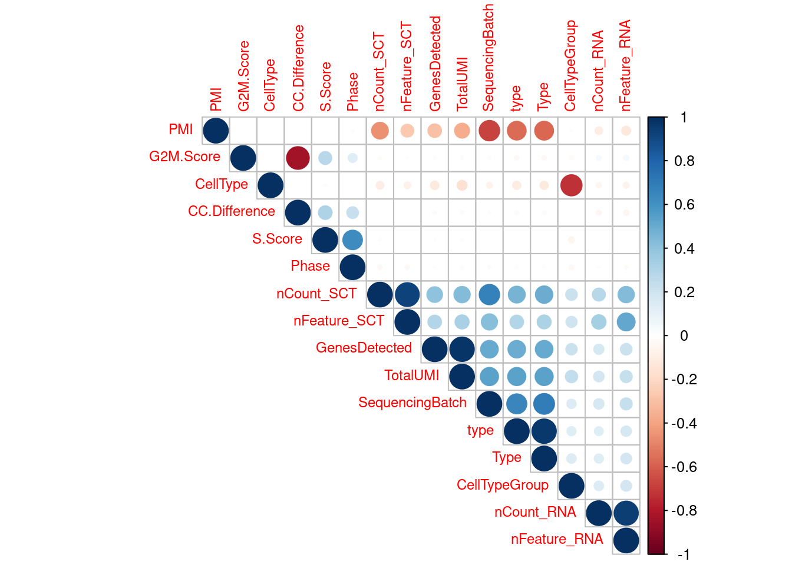
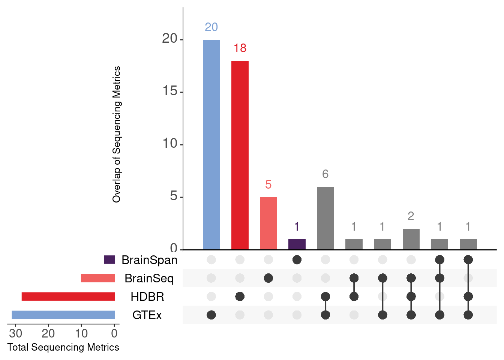
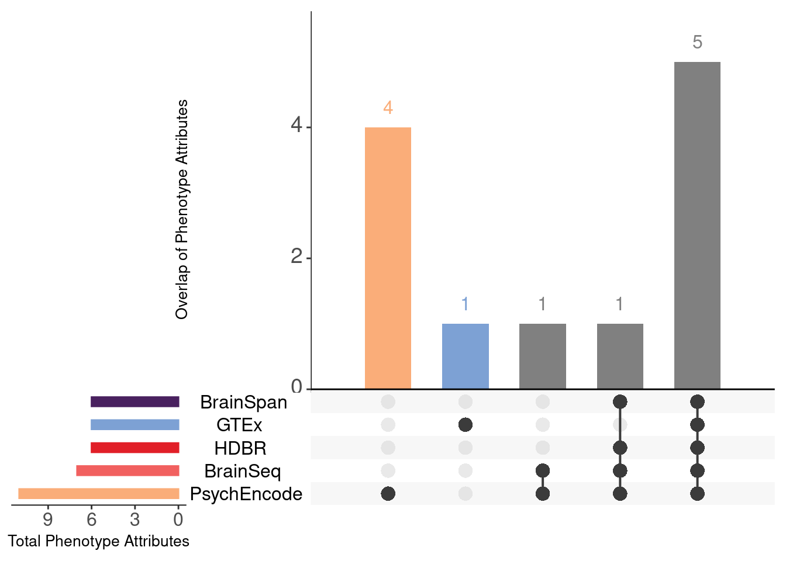
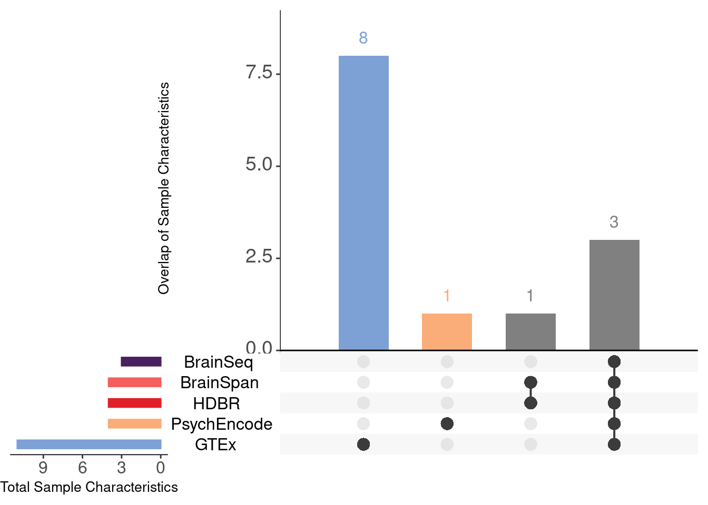
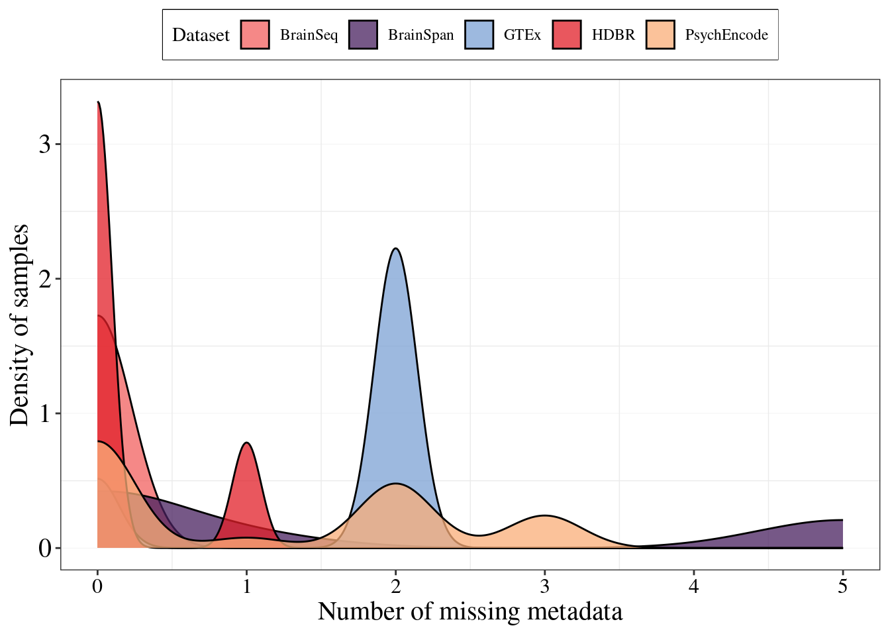

Last updated: 2024-04-02
Checks: 7 0
Knit directory: BITHub-preprocessing/
This reproducible R Markdown analysis was created with workflowr (version 1.7.1). The Checks tab describes the reproducibility checks that were applied when the results were created. The Past versions tab lists the development history.
Great! Since the R Markdown file has been committed to the Git repository, you know the exact version of the code that produced these results.
Great job! The global environment was empty. Objects defined in the global environment can affect the analysis in your R Markdown file in unknown ways. For reproduciblity it’s best to always run the code in an empty environment.
The command set.seed(20230919) was run prior to running
the code in the R Markdown file. Setting a seed ensures that any results
that rely on randomness, e.g. subsampling or permutations, are
reproducible.
Great job! Recording the operating system, R version, and package versions is critical for reproducibility.
Nice! There were no cached chunks for this analysis, so you can be confident that you successfully produced the results during this run.
Great job! Using relative paths to the files within your workflowr project makes it easier to run your code on other machines.
Great! You are using Git for version control. Tracking code development and connecting the code version to the results is critical for reproducibility.
The results in this page were generated with repository version a450b04. See the Past versions tab to see a history of the changes made to the R Markdown and HTML files.
Note that you need to be careful to ensure that all relevant files for
the analysis have been committed to Git prior to generating the results
(you can use wflow_publish or
wflow_git_commit). workflowr only checks the R Markdown
file, but you know if there are other scripts or data files that it
depends on. Below is the status of the Git repository when the results
were generated:
Ignored files:
Ignored: .Rproj.user/
Ignored: output/Thesis_plots/Variance/PCA/BrainSpan/brainspan-varPart-cor/
Unstaged changes:
Deleted: HDBR-PC-cor-filt.pdf
Modified: analysis/_site.yml
Deleted: cerebroViz_output_outer_1.svg
Deleted: cerebroViz_output_slice_1.svg
Note that any generated files, e.g. HTML, png, CSS, etc., are not included in this status report because it is ok for generated content to have uncommitted changes.
These are the previous versions of the repository in which changes were
made to the R Markdown
(analysis/03-metadata-attributes.Rmd) and HTML
(docs/03-metadata-attributes.html) files. If you’ve
configured a remote Git repository (see ?wflow_git_remote),
click on the hyperlinks in the table below to view the files as they
were in that past version.
| File | Version | Author | Date | Message |
|---|---|---|---|---|
| html | 20c235a | urwahnawaz | 2024-04-02 | Build site. |
| Rmd | 7007796 | urwahnawaz | 2024-04-02 | wflow_publish(c("analysis/04-bulk-deconvolution.Rmd", "analysis/03-metadata-attributes.Rmd", |
| html | 727f567 | urwahnawaz | 2024-04-02 | Build site. |
| html | 8033da0 | urwahnawaz | 2024-04-02 | Build site. |
| Rmd | 95607d0 | urwahnawaz | 2024-04-02 | wflow_publish(c("analysis/03-metadata-attributes.Rmd", "analysis/index.Rmd")) |
library(recount3)
library(magrittr)
library(tibble)
library(reshape2)
library(SummarizedExperiment)
library(corrplot)
library(dplyr)
library(ggvenn)
library(pander)
library(gridExtra)
library(variancePartition)
library(DT)
library(EnsDb.Hsapiens.v86)
library(singscore)
library(AnnotationHub)
library(stargazer)
library(ggfortify)
library(glue)
library(cowplot)
library(broom)
library(glmpca)
library(DT)
library(naniar)
source("code/preprocess/functions.R")
source("code/preprocess/def_stages.R")
library(UpSetR)
library(patchwork)
library(pheatmap)
library(ggpubr)To allow comparison of gene expression with a metadata variable of interest, BITHub contains comprehensive metadata annotations of the curated datasets. There are three main categories of annotation are present in BITHub:
Phenotype annotations: Relating to the phenotype and origin of sample, including sex, donorIDs, age of donor, diagnosis and ethnicity
Sequencing metrics These annotations relate to the quality of the RNA-seq samples and how they were experimentally prepared (if available).
Sample characteristics These include the charateristics of the samples.
In order to ensure the metadata information is displayed in a user-friendly manner, highly correlated metadata annotations will be removed and a subset will be used for the site.
Several datasets on BITHub contain redundant metadata variables related to sequencing metrics. These datasets include the BrainSeq, GTEx, HDBR and the snRNA-seq datasets including HCA and Aldinger et al. To remove these, a correlation analysis of all sequencing metrics was performed. Correlation of metadata was prepared after processing the raw metadata and expression files. If you are interested in that part of the pipeline, please refer to the README.md in the Github repo.
dir = file.path("/home/neuro/Documents/BrainData/Bulk")
sn_dir = file.path("/home/neuro/Documents/BrainData/single-cell")
md = list()
md$BrainSeq = read.csv(file.path(dir,"Brainseq/Formatted/BrainSeq-metadata.csv"), header=TRUE, check.names = FALSE, row.names = 1)
md$BrainSpan = read.csv(file.path(dir,"BrainSpan/Formatted/BrainSpan-metadata.csv"), header=TRUE, check.names = FALSE, row.names = 1)
md$GTEx = read.csv(file.path(dir,"GTEx/Formatted/GTEx-metadata.csv"), header=TRUE, check.names = FALSE, row.names =1)
md$HDBR = read.csv(file.path(dir, "HDBR/Formatted/HDBR-metadata.csv"), header=TRUE, check.names = FALSE, row.names =1)
#md$FANTOM5 = read.csv(file.path(dir, "Fantom5/Formatted/FANTOM5-metadata.csv"), header=TRUE, check.names = FALSE)
md$PsychEncode = read.csv(file.path(dir, "PsychEncode/Formatted/PsychEncode-metadata.csv"), header=TRUE, check.names = FALSE)
md$Velmeshev = read.csv(file.path(dir, "HDBR/Formatted/HDBR-metadata.csv"), header=TRUE, check.names = FALSE)
md$Aldringer = read.csv(file.path(sn_dir, "aldinger/Aldringer-metadata.csv"), header=TRUE, check.names = FALSE)annot = list()
annot$BrainSpan = read.csv(here::here("data/annotations/BrainSpan-metadata-annot.csv"), header=TRUE) %>%
mutate(Dataset = c("BrainSpan"))
annot$BrainSeq = read.csv(here::here("data/annotations/BrainSeq-metadata-annot.csv"), header=TRUE) %>%
mutate(Dataset = c("BrainSeq"))
annot$GTEx = read.csv(here::here("data/annotations/GTEx-metadata-annot.csv"), header=TRUE) %>%
mutate(Dataset = c("GTEx"))
annot$PsychEncode = read.csv(here::here("data/annotations/PsychEncode-metadata-annot.csv"), header=TRUE) %>%
mutate(Dataset = c("PsychEncode"))
annot$FANTOM5 = read.csv(here::here("data/annotations/Fantom5-metadata-annot.csv"), header=TRUE) %>%
mutate(Dataset = c("FANTOM5"))
annot$HDBR = read.csv(here::here("data/annotations/HDBR-metadata-annot.csv"), header=TRUE) %>%
mutate(Dataset = c("HDBR"))
annot$Velmeshev = read.csv(here::here("data/annotations/Velmeshev-annot.csv"), header=TRUE) %>%
mutate(Dataset = c("Velmeshev"))
annot$Aldringer = read.csv(here::here("data/annotations/Aldringer-metadata-annot.csv"), header=TRUE) %>%
mutate(Dataset = c("Aldringer"))
annot$HCA = read.csv(here::here("data/annotations/HCA-annot.csv"), header=TRUE) %>%
mutate(Dataset = c("HCA"))
annot$Cameron = read.csv(here::here("data/annotations/Cameron-metadata-annot.csv"), header=TRUE) %>%
mutate(Dataset = c("Cameron"))annot_seq = annot$BrainSeq %>%
dplyr::filter(Type == "Sequencing metrics")
md.clean = md$BrainSeq %>%
dplyr::select(contains(annot_seq$BITColumnName))
md.clean = md.clean %>% select_if(~ !any(is.na(.)))
md.clean = md.clean[vapply(md.clean, function(x) length(unique(x)) > 1, logical(1L))]M = cor(data.matrix(md.clean), use = "complete.obs")
#pdf(here::here("output/Thesis_plots/Metadata/BrainSeq-cor-seq-metadata.pdf"), height = 10, width=10)
corrplot(M, order='hclust',
method = "circle",
number.cex = .50,
tl.cex=0.75)Correlation plot showing highly correlating metadata variables in BrainSeq
| Version | Author | Date |
|---|---|---|
| 8033da0 | urwahnawaz | 2024-04-02 |
#dev.off()The final BrainSeq sequencing metrics contain the following columns:
annot$BrainSeq %>%
dplyr::filter(Include..Yes.No....Interest == "Yes") %>%
DT::datatable()annot_seq = annot$GTEx %>%
dplyr::filter(Type == "Sequencing metrics")
md.clean = md$GTEx %>%
dplyr::select(contains(annot_seq$BITColumnName))
md.clean = md.clean %>% select_if(~ !any(is.na(.)))
md.clean = md.clean[vapply(md.clean, function(x) length(unique(x)) > 1, logical(1L))]#pdf(here::here("output/Thesis_plots/Metadata/GTEx-cor-seq-metadata.pdf"), height = 10, width=10)
M = cor(data.matrix(md.clean), use = "complete.obs")
corrplot(M, order='hclust',
method = "circle",
number.cex = .50,
tl.cex=0.75)Correlation plot showing highly correlating metadata variables in GTEx
| Version | Author | Date |
|---|---|---|
| 8033da0 | urwahnawaz | 2024-04-02 |
#dev.off()annot$GTEx %>%
dplyr::filter(Include..Yes.No....Interest == "Yes") %>%
DT::datatable()–>
–> –> –> –> –> –> –> –>
–> –> –> –> –> –> –>
hdbr_annot_seq = annot$HDBR %>%
dplyr::filter(Type == "Sequencing metrics")
md.seq = md$HDBR %>%
dplyr::select(contains(hdbr_annot_seq$BITColumnName)) %>%
dplyr::select(-c("Percentage_fragment_mapped_unique_exon_fc",
"Total_fragments_assigned_exon_fc",
"Total_fragments_count_unique_exon_fc",
"Total_fragments_count_unique_assigned_exon_fc",
"AUC_all_annotated_exons", "AUC_all_annotated_exons_unique",
"BigWigFile", "CellLinePrediction","PredictionType",
"CuratedTypePrediction", "PredictionType",
"Metadata_source", "Metadata_source", "LibraryName",
"LibraryStrategy", "LibrarySource", "LibraryLayout",
"LibrarySelection", "CellTypePrediction", "PatternPredictionType",
"SampleAccPrediction", "CuratedTissuePrediction",
"Mapping_speed_per_hour_STAR", "ReadInfo", "RunAlias",
"Run_Center_Name", "Run_Broker_name", "Run_Center", "Processed_Recount",
"FileSource_Recount", "Organism_recount", "PlatformModel",
"SampleAttributes", "ExperimentAttributes", "SampleName",
"SampleTitle", "RunPublished", "Size",
"MeanFragmentLength_BAM", "Total_fragments_input_fc_exon_fc"))
md.seq.clean = md.seq %>% select_if(~ !any(is.na(.)))
md.seq.clean = md.seq.clean[vapply(md.seq.clean, function(x) length(unique(x)) > 1, logical(1L))]#M = cor(data.matrix(md.seq.clean), use = "complete.obs")
#pdf(here::here("output/Thesis_plots/Metadata/HDBR-corplot.pdf"), height = 25, width=25)
corrplot(M, order='hclust',
method = "circle",
number.cex = .50,
cl.cex = 3,
tl.cex=1.2)Correlation plot showing highly correlating metadata variables in HDBR
| Version | Author | Date |
|---|---|---|
| 8033da0 | urwahnawaz | 2024-04-02 |
#dev.off()annot$HDBR %>%
dplyr::filter(Include..Yes.No....Interest == "Yes") %>%
DT::datatable()The redundant metadata columns have been removed for BITHub, however, the metadata have not been fully explored in the BITHub thesis chapter.
aldringer_annot_seq = annot$Aldringer %>%
dplyr::filter(Type == "Sequencing metrics")
md.seq = md$Aldringer %>%
dplyr::select(contains(aldringer_annot_seq$BITColumnName))
md.seq.clean = md.seq %>% select_if(~ !any(is.na(.)))
md.seq.clean = md.seq.clean[vapply(md.seq.clean, function(x) length(unique(x)) > 1, logical(1L))]
M = cor(data.matrix(md.seq.clean ), use = "complete.obs")
corrplot(M, order='hclust',
method = "circle",
number.cex = .50,
tl.cex=0.75, type="upper")
| Version | Author | Date |
|---|---|---|
| 8033da0 | urwahnawaz | 2024-04-02 |
The removal of these redundant metadata attributes resulted in 91 unique metadata across all bulk RNA-seq datasets. These metadata can be identified in `data/Tables/Supplementary_Table_2.xlsx’.
As metadata were categorized into a concept that they represented (i.e Sequencing Metrics, Phenotype attributes, Sample characteristics), I overlapped metadata belonging to each of these categories were then overlapped to determine the set of common metadata attributes across all datasets.
annot = lapply(annot, function(x){
x %<>%
dplyr::filter(Include..Yes.No....Interest == "Yes")
return(x)
})
md$BrainSeq %<>% dplyr::select(contains(annot$BrainSeq$BITColumnName))
md$BrainSpan %<>% dplyr::select(contains(annot$BrainSpan$BITColumnName))
md$GTEx %<>% dplyr::select(contains(annot$GTEx$BITColumnName))
md$HDBR %<>% dplyr::select(contains(annot$HDBR$BITColumnName))
md$PsychEncode %<>% dplyr::select(contains(annot$PsychEncode$BITColumnName))seq.metrics = lapply(annot, function(x){
x = x %>%
dplyr::filter(Type == "Sequencing metrics")
return(x)
})
pheno.metrics = lapply(annot, function(x){
x = x %>%
dplyr::filter(Type == "Phenotype")
return(x)
})
annot = lapply(annot, function(x){
x = x %>%
mutate(Type = gsub("Sample charactertics", "Sample characteristics", Type))
return(x)
})
sample.metrics = lapply(annot, function(x){
x = x %>%
dplyr::filter(Type == "Sample characteristics")
return(x)
})library(VennDiagram)
v= list( "BrainSeq" = seq.metrics$BrainSeq$BITColumnName,
"BrainSpan" = seq.metrics$BrainSpan$BITColumnName,
"GTEx" = seq.metrics$GTEx$BITColumnName,
"HDBR" = seq.metrics$HDBR$BITColumnName,
"PsychEncode" = seq.metrics$PsychEncode$BITColumnName
# "HCA" = hca.tech$BITHubColumnName,
# "Cameron et al" = cam.tech$BITHubColumnName,
#"Velmeshev et al" = vel.tech$BITColumnName,
#"Aldringer et al" = adl.tech$BITHubColumnName
#,
# "Ramaker" = ram.tech$BITColumnName
)
a=calculate.overlap(v)
plot =UpSetR::upset(fromList(v), sets.bar.color = c("#7DA1D4","#E11F28","#F1605F","#49215F"),
main.bar.color = c("#7DA1D4","#E11F28","#F1605F","#49215F",
"#808080","#808080","#808080","#808080",
"#808080","#808080"),
mainbar.y.label = "Overlap of Sequencing Metrics",
sets.x.label = "Total Sequencing Metrics",
text.scale = c(1.2, 2, 1.2),
point.size = 4)plot
| Version | Author | Date |
|---|---|---|
| 8033da0 | urwahnawaz | 2024-04-02 |
combos <- Reduce(c,lapply(2:length(v),
function(x) combn(1:length(v),x,simplify=FALSE) ))
intersect <- lapply(combos, function(x) Reduce(intersect,v[x]) )v= list( "BrainSeq" = pheno.metrics$BrainSeq$BITColumnName,
"BrainSpan" = pheno.metrics$BrainSpan$BITColumnName,
"GTEx" = pheno.metrics$GTEx$BITColumnName,
"HDBR" = pheno.metrics$HDBR$BITColumnName,
"PsychEncode" = pheno.metrics$PsychEncode$BITColumnName
# "HCA" = hca.tech$BITHubColumnName,
# "Cameron et al" = cam.tech$BITHubColumnName,
#"Velmeshev et al" = vel.tech$BITColumnName,
#"Aldringer et al" = adl.tech$BITHubColumnName
#,
# "Ramaker" = ram.tech$BITColumnName
)
UpSetR::upset(fromList(v), sets.bar.color = c("#FAAD79","#F1605F","#E11F28","#7DA1D4","#49215F"),
main.bar.color = c("#FAAD79","#7DA1D4",
"#808080","#808080","#808080"),
mainbar.y.label = "Overlap of Phenotype Attributes",
sets.x.label = "Total Phenotype Attributes",
text.scale = c(1.2, 2, 1.2),
point.size = 4)
| Version | Author | Date |
|---|---|---|
| 8033da0 | urwahnawaz | 2024-04-02 |
combos <- Reduce(c,lapply(2:length(v),
function(x) combn(1:length(v),x,simplify=FALSE) ))
intersect <- lapply(combos, function(x) Reduce(intersect,v[x]) )v= list( "BrainSeq" = pheno.metrics$BrainSeq$BITColumnName,
"BrainSpan" = pheno.metrics$BrainSpan$BITColumnName,
"GTEx" = pheno.metrics$GTEx$BITColumnName,
"HDBR" = pheno.metrics$HDBR$BITColumnName,
"PsychEncode" = pheno.metrics$PsychEncode$BITColumnName
# "HCA" = hca.tech$BITHubColumnName,
# "Cameron et al" = cam.tech$BITHubColumnName,
#"Velmeshev et al" = vel.tech$BITColumnName,
#"Aldringer et al" = adl.tech$BITHubColumnName
#,
# "Ramaker" = ram.tech$BITColumnName
)
UpSetR::upset(fromList(v), sets.bar.color = c("#FAAD79","#F1605F","#E11F28","#7DA1D4","#49215F"),
main.bar.color = c("#FAAD79","#7DA1D4",
"#808080","#808080","#808080"),
mainbar.y.label = "Overlap of Phenotype Attributes",
sets.x.label = "Total Phenotype Attributes",
text.scale = c(1.2, 2, 1.2),
point.size = 4)
| Version | Author | Date |
|---|---|---|
| 8033da0 | urwahnawaz | 2024-04-02 |
combos <- Reduce(c,lapply(2:length(v),
function(x) combn(1:length(v),x,simplify=FALSE) ))
intersect <- lapply(combos, function(x) Reduce(intersect,v[x]) )v= list( "BrainSeq" = sample.metrics$BrainSeq$BITColumnName,
"BrainSpan" = sample.metrics$BrainSpan$BITColumnName,
"GTEx" = sample.metrics$GTEx$BITColumnName,
"HDBR" = sample.metrics$HDBR$BITColumnName,
"PsychEncode" = sample.metrics$PsychEncode$BITColumnName
# "HCA" = hca.tech$BITHubColumnName,
# "Cameron et al" = cam.tech$BITHubColumnName,
#"Velmeshev et al" = vel.tech$BITColumnName,
#"Aldringer et al" = adl.tech$BITHubColumnName
#,
# "Ramaker" = ram.tech$BITColumnName
)
UpSetR::upset(fromList(v), sets.bar.color = c("#7DA1D4","#FAAD79","#E11F28","#F1605F","#49215F"),
main.bar.color = c("#7DA1D4","#FAAD79",
"#808080","#808080"),
mainbar.y.label = "Overlap of Sample Characteristics",
sets.x.label = "Total Sample Characteristics",
text.scale = c(1.2, 2, 1.2),
point.size = 4)
| Version | Author | Date |
|---|---|---|
| 8033da0 | urwahnawaz | 2024-04-02 |
combos <- Reduce(c,lapply(2:length(v),
function(x) combn(1:length(v),x,simplify=FALSE) ))
intersect <- lapply(combos, function(x) Reduce(intersect,v[x]) )I assessed the quality of the metadata by determining the extent of missing information across the available and retained metadata columns in all datasets.
count_na <- function(x) sum(is.na(x))
# md$ %>%
# mutate(count_na = apply(., 1, count_na)) %>%
# ggplot(aes(count_na)) + geom_density()
na_calc = lapply(md[1:5], function(x){
x %<>%
mutate(count_na = apply(., 1, count_na)) %>%
dplyr::select(count_na)
return(x)
})
total_nb = do.call(rbind, na_calc) %>%
rownames_to_column("Dataset") %>%
dplyr::filter(count_na != 0)#ggsave(filename = here::here("output/Thesis_plots/Metadata/missing_md.svg"), height=6, width = 7, units = "in")
do.call(rbind, na_calc) %>%
rownames_to_column("Dataset") %>%
mutate(Dataset = gsub("\\..*", "", Dataset)) %>%
ggplot(aes(count_na, fill= Dataset)) +
geom_density(alpha = 0.75) +
theme_bw() +
scale_fill_manual(values =c("BrainSeq" ="#F1605F",
"BrainSpan" = "#49215F",
"GTEx" = "#7DA1D4",
"HDBR" = "#E11F28",
"PsychEncode" = "#FAAD79"))+
xlab("Number of missing metadata") +
ylab("Density of samples") +
theme(axis.text.x = element_text(size = 12, family = "serif", color = "black"),
axis.text.y = element_text(size = 15, family = "serif", color = "black"),
axis.title = element_text(size=15, family = "serif"),
legend.box.background = element_rect(color = "black"),
legend.text = element_text(family = "serif"),
legend.title = element_text( family = "serif"),
plot.title = element_text(family = "serif", size =20),
panel.grid.major.x = element_blank(),
panel.grid.major.y = element_line( size=.1 ),
legend.position = "top")
| Version | Author | Date |
|---|---|---|
| 8033da0 | urwahnawaz | 2024-04-02 |
#dev.off()#write.csv(file = file.path(dir,"Brainseq/Formatted/BrainSeq-metadata-subset.csv"), md$BrainSeq)
#write.csv(file= file.path(dir,"BrainSpan/Formatted/BrainSpan-metadata-subset.csv"), md$BrainSpan)
#write.csv(file = file.path(dir,"GTEx/Formatted/GTEx-metadata-subset.csv"), md$GTEx)
#write.csv(file= file.path(dir, "PsychEncode/Formatted/PsychEncode-metadata-subset.csv"), md$PsychEncode)
#write.csv(file = file.path(dir, "HDBR/Formatted/HDBR-metadata-subset.csv"), md$HDBR)
sessionInfo()R version 4.3.3 (2024-02-29)
Platform: x86_64-pc-linux-gnu (64-bit)
Running under: Ubuntu 22.04.4 LTS
Matrix products: default
BLAS: /usr/lib/x86_64-linux-gnu/blas/libblas.so.3.10.0
LAPACK: /usr/lib/x86_64-linux-gnu/lapack/liblapack.so.3.10.0
locale:
[1] LC_CTYPE=en_AU.UTF-8 LC_NUMERIC=C
[3] LC_TIME=en_AU.UTF-8 LC_COLLATE=en_AU.UTF-8
[5] LC_MONETARY=en_AU.UTF-8 LC_MESSAGES=en_AU.UTF-8
[7] LC_PAPER=en_AU.UTF-8 LC_NAME=C
[9] LC_ADDRESS=C LC_TELEPHONE=C
[11] LC_MEASUREMENT=en_AU.UTF-8 LC_IDENTIFICATION=C
time zone: Australia/Adelaide
tzcode source: system (glibc)
attached base packages:
[1] tools grid stats4 stats graphics grDevices utils
[8] datasets methods base
other attached packages:
[1] VennDiagram_1.7.3 futile.logger_1.4.3
[3] ggpubr_0.6.0 pheatmap_1.0.12
[5] patchwork_1.2.0 UpSetR_1.4.0
[7] lubridate_1.9.3 forcats_1.0.0
[9] purrr_1.0.2 readr_2.1.5
[11] tidyverse_2.0.0 stringr_1.5.1
[13] tidyr_1.3.0 scales_1.3.0
[15] data.table_1.14.10 readxl_1.4.3
[17] naniar_1.0.0 glmpca_0.2.0
[19] broom_1.0.5 cowplot_1.1.2
[21] glue_1.7.0 ggfortify_0.4.16
[23] stargazer_5.2.3 AnnotationHub_3.10.0
[25] BiocFileCache_2.10.1 dbplyr_2.4.0
[27] singscore_1.22.0 EnsDb.Hsapiens.v86_2.99.0
[29] ensembldb_2.26.0 AnnotationFilter_1.26.0
[31] GenomicFeatures_1.54.1 AnnotationDbi_1.64.1
[33] DT_0.31 variancePartition_1.32.2
[35] BiocParallel_1.36.0 limma_3.58.1
[37] gridExtra_2.3 pander_0.6.5
[39] ggvenn_0.1.10 ggplot2_3.4.4
[41] dplyr_1.1.4 corrplot_0.92
[43] reshape2_1.4.4 tibble_3.2.1
[45] magrittr_2.0.3 recount3_1.12.0
[47] SummarizedExperiment_1.32.0 Biobase_2.62.0
[49] GenomicRanges_1.54.1 GenomeInfoDb_1.38.5
[51] IRanges_2.36.0 S4Vectors_0.40.2
[53] BiocGenerics_0.48.1 MatrixGenerics_1.14.0
[55] matrixStats_1.2.0 workflowr_1.7.1
loaded via a namespace (and not attached):
[1] fs_1.6.3 ProtGenerics_1.34.0
[3] bitops_1.0-7 httr_1.4.7
[5] RColorBrewer_1.1-3 numDeriv_2016.8-1.1
[7] backports_1.4.1 utf8_1.2.4
[9] R6_2.5.1 lazyeval_0.2.2
[11] withr_3.0.0 prettyunits_1.2.0
[13] cli_3.6.2 formatR_1.14
[15] labeling_0.4.3 sass_0.4.8
[17] mvtnorm_1.2-4 Rsamtools_2.18.0
[19] R.utils_2.12.3 sessioninfo_1.2.2
[21] rstudioapi_0.15.0 RSQLite_2.3.5
[23] generics_0.1.3 BiocIO_1.12.0
[25] crosstalk_1.2.1 gtools_3.9.5
[27] car_3.1-2 Matrix_1.6-5
[29] fansi_1.0.6 abind_1.4-5
[31] R.methodsS3_1.8.2 lifecycle_1.0.4
[33] whisker_0.4.1 yaml_2.3.8
[35] edgeR_4.0.11 carData_3.0-5
[37] gplots_3.1.3 SparseArray_1.2.3
[39] blob_1.2.4 promises_1.2.1
[41] crayon_1.5.2 lattice_0.22-5
[43] annotate_1.80.0 KEGGREST_1.42.0
[45] pillar_1.9.0 knitr_1.45
[47] rjson_0.2.21 boot_1.3-28.1
[49] corpcor_1.6.10 codetools_0.2-19
[51] getPass_0.2-4 vctrs_0.6.5
[53] png_0.1-8 Rdpack_2.6
[55] cellranger_1.1.0 gtable_0.3.4
[57] cachem_1.0.8 xfun_0.41
[59] rbibutils_2.2.16 S4Arrays_1.2.0
[61] mime_0.12 iterators_1.0.14
[63] statmod_1.5.0 interactiveDisplayBase_1.40.0
[65] ellipsis_0.3.2 nlme_3.1-164
[67] pbkrtest_0.5.2 bit64_4.0.5
[69] progress_1.2.3 EnvStats_2.8.1
[71] filelock_1.0.3 rprojroot_2.0.4
[73] bslib_0.6.1 KernSmooth_2.23-22
[75] colorspace_2.1-0 DBI_1.2.1
[77] tidyselect_1.2.0 processx_3.8.3
[79] bit_4.0.5 compiler_4.3.3
[81] curl_5.2.0 git2r_0.33.0
[83] graph_1.80.0 xml2_1.3.6
[85] DelayedArray_0.28.0 rtracklayer_1.62.0
[87] caTools_1.18.2 remaCor_0.0.16
[89] callr_3.7.3 rappdirs_0.3.3
[91] digest_0.6.34 minqa_1.2.6
[93] rmarkdown_2.25 aod_1.3.3
[95] XVector_0.42.0 RhpcBLASctl_0.23-42
[97] htmltools_0.5.7 pkgconfig_2.0.3
[99] lme4_1.1-35.1 highr_0.10
[101] fastmap_1.1.1 rlang_1.1.3
[103] htmlwidgets_1.6.4 shiny_1.8.0
[105] farver_2.1.1 jquerylib_0.1.4
[107] jsonlite_1.8.8 R.oo_1.25.0
[109] RCurl_1.98-1.14 GenomeInfoDbData_1.2.11
[111] munsell_0.5.0 Rcpp_1.0.12
[113] visdat_0.6.0 stringi_1.8.3
[115] zlibbioc_1.48.0 MASS_7.3-60.0.1
[117] plyr_1.8.9 parallel_4.3.3
[119] Biostrings_2.70.1 splines_4.3.3
[121] hms_1.1.3 locfit_1.5-9.8
[123] ps_1.7.6 ggsignif_0.6.4
[125] biomaRt_2.58.0 futile.options_1.0.1
[127] BiocVersion_3.18.1 XML_3.99-0.16
[129] evaluate_0.23 lambda.r_1.2.4
[131] BiocManager_1.30.22 nloptr_2.0.3
[133] tzdb_0.4.0 httpuv_1.6.13
[135] xtable_1.8-4 restfulr_0.0.15
[137] fANCOVA_0.6-1 rstatix_0.7.2
[139] later_1.3.2 lmerTest_3.1-3
[141] memoise_2.0.1 GenomicAlignments_1.38.2
[143] timechange_0.3.0 here_1.0.1
[145] GSEABase_1.64.0